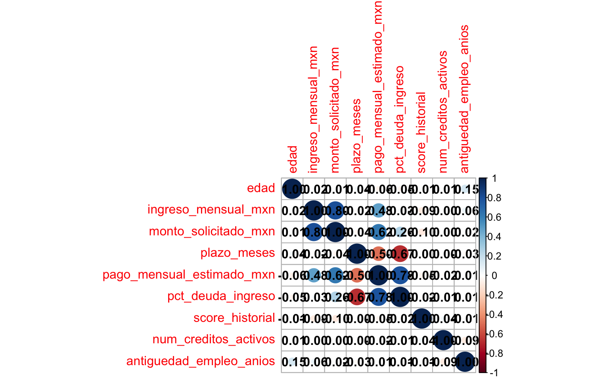
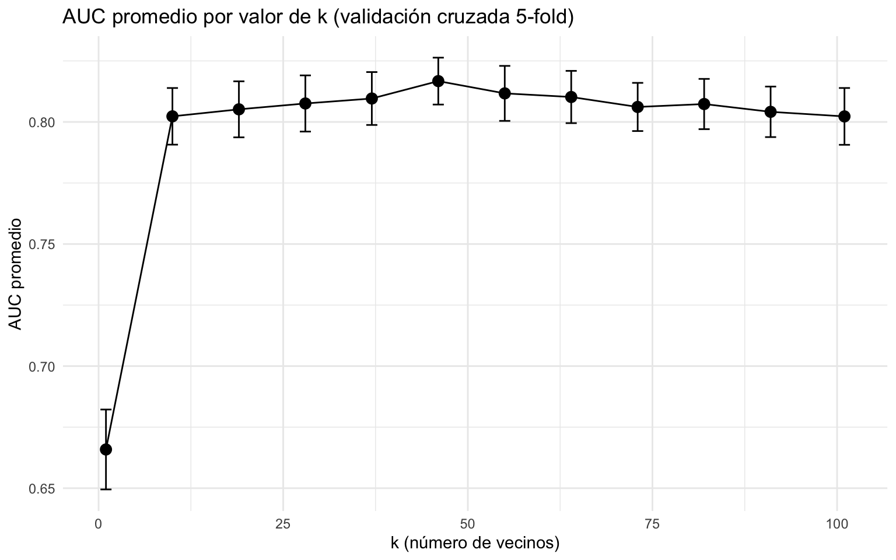
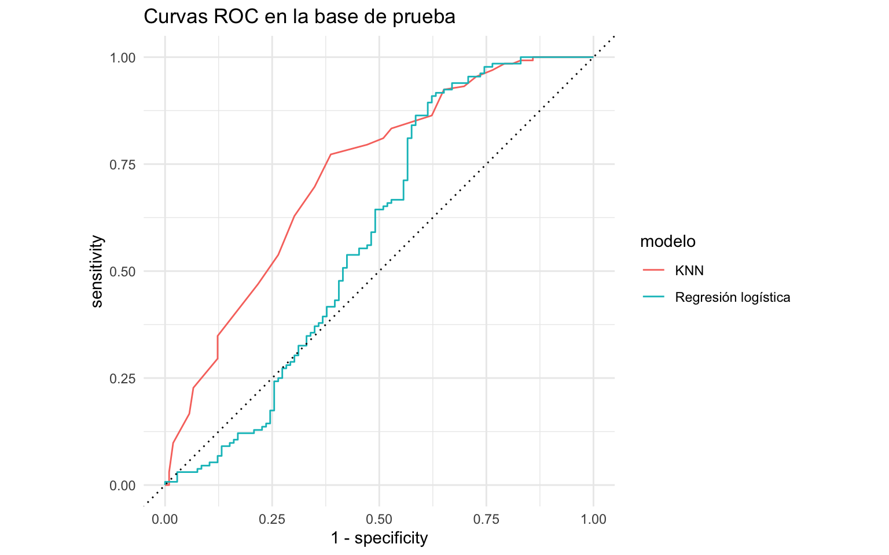
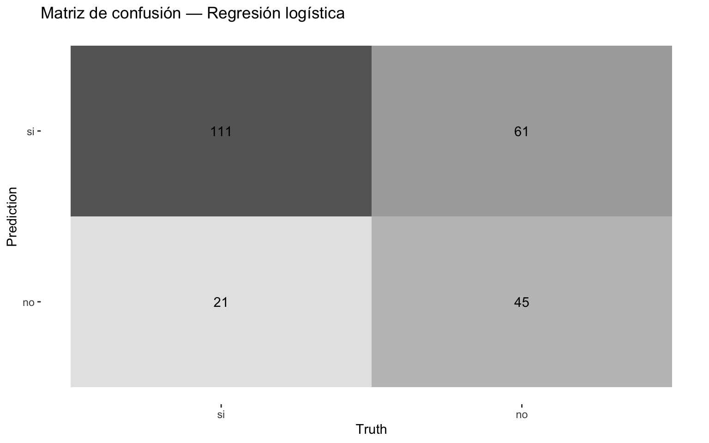
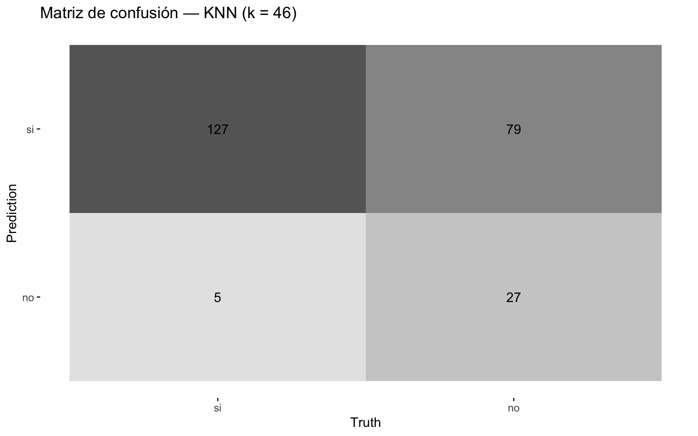

options(scipen = 999)Clasificación: aprobación de crédito
EJERCICIO DE CLASIFICACIÓN — Regresión logística vs. KNN
Objetivo. Predecir si una solicitud de crédito de consumo será aprobada (aprobado: si/no) a partir del perfil financiero y sociodemográfico del solicitante. Compararemos dos clasificadores sobre el mismo flujo: una regresión logística (lineal, interpretable) y KNN (k-vecinos más cercanos, basado en distancias). Recorremos el flujo completo: partición, receta, workflow(), validación cruzada, tuning y evaluación honesta con last_fit(), y cerramos con una recomendación clara.
1. Cargar librerías
Cargamos todo al inicio. kknn es el motor que parsnip usa por detrás para KNN; corrplot dibuja la matriz de correlación.
library(tidyverse)
library(tidymodels)
library(corrplot)
library(kknn)tidymodels::tidymodels_prefer()2. Cargar los datos
Removemos id_solicitud (identificador, no predictor) y convertimos la objetivo a factor. Fijamos "si" como primer nivel: yardstick toma el primer nivel como el evento de interés, de modo que sensibilidad, AUC y demás métricas se calculen sobre “aprobado = si”.
creditos <- read_csv("datos.csv") %>%
select(-id_solicitud) %>%
mutate(aprobado = factor(aprobado, levels = c("si", "no")))glimpse(creditos)Rows: 950
Columns: 10
$ edad <dbl> 19, 30, 24, 51, 25, 68, 39, 73, 22, 53, 59, …
$ ingreso_mensual_mxn <dbl> 45819, 7622, 39178, 13792, 7764, 22826, 2283…
$ monto_solicitado_mxn <dbl> 340000, 61000, 163000, 82000, 39000, 128000,…
$ plazo_meses <dbl> 36, 12, 6, 6, 24, 36, 12, 36, 24, 24, 24, 36…
$ pago_mensual_estimado_mxn <dbl> 9444, 5083, 27167, 13667, 1625, 3556, 10583,…
$ pct_deuda_ingreso <dbl> 0.206, 0.667, 0.693, 0.991, 0.209, 0.156, 0.…
$ score_historial <dbl> 649, 641, 670, 716, 799, 626, 653, 771, 590,…
$ num_creditos_activos <dbl> 0, 0, 1, 1, 3, 3, 1, 0, 0, 1, 3, 0, 1, 1, 3,…
$ antiguedad_empleo_anios <dbl> 2.0, 9.7, 1.3, 7.0, 1.7, 2.7, 7.2, 20.1, 3.7…
$ aprobado <fct> si, no, no, no, no, si, si, no, no, si, no, …3. Explorar los datos
Tres revisiones mínimas antes de modelar: el balance de clases, los datos faltantes y la colinealidad.
El balance importa porque, si una clase fuera muy rara, el accuracy dejaría de ser confiable (predecir siempre la mayoría daría un accuracy alto pero inútil). Aquí veremos que está casi balanceado.
creditos %>%
group_by(aprobado) %>%
count() %>%
ungroup() %>%
mutate(porcentaje = 100 * (n / sum(n)))| aprobado | n | porcentaje |
|---|---|---|
| si | 528 | 55.57895 |
| no | 422 | 44.42105 |
Contamos los NA: esto guía la imputación. Esperamos faltantes en ingreso_mensual_mxn y score_historial.
creditos %>%
summarise(across(everything(), ~ sum(is.na(.)))) %>%
pivot_longer(everything(), names_to = "variable", values_to = "n_na") %>%
arrange(desc(n_na))| variable | n_na |
|---|---|
| ingreso_mensual_mxn | 47 |
| score_historial | 38 |
| edad | 0 |
| monto_solicitado_mxn | 0 |
| plazo_meses | 0 |
| pago_mensual_estimado_mxn | 0 |
| pct_deuda_ingreso | 0 |
| num_creditos_activos | 0 |
| antiguedad_empleo_anios | 0 |
| aprobado | 0 |
La matriz de correlación revela colinealidad: monto_solicitado_mxn, pago_mensual_estimado_mxn y pct_deuda_ingreso se derivan unas de otras. En KNN, dos variables redundantes harían que esa información pese doble en la distancia; por eso luego las filtramos con step_corr().
matriz_correlacion <- creditos %>%
select(where(is.numeric)) %>%
drop_na() %>%
cor() %>%
round(2)
matriz_correlacion %>%
corrplot(method = "circle", addCoef.col = "black")
4. Partición entrenamiento / prueba (estratificada)
Separamos 75% para entrenamiento y 25% para prueba. Estratificamos por aprobado para que ambas particiones conserven la misma proporción de clases. La prueba se reserva para el final.
set.seed(2026)
creditos_split <- initial_split(creditos, prop = 0.75, strata = aprobado)
creditos_entrenamiento <- creditos_split %>% training()
creditos_prueba <- creditos_split %>% testing()table(creditos_entrenamiento$aprobado) %>% prop.table()
si no
0.5561798 0.4438202 table(creditos_prueba$aprobado) %>% prop.table()
si no
0.5546218 0.4453782 5. Receta de preprocesamiento (compartida por ambos modelos)
Usamos una sola receta para que ambos modelos vean la misma representación de los datos.
¿Qué es una receta y por qué importa el orden?
Una receta encadena pasos (step_*) que se aprenden solo con el entrenamiento y se aplican igual a la prueba (evita fuga de información). El orden importa: imputamos primero (los pasos siguientes no toleran NA), filtramos colinealidad y normalizamos, que es indispensable para KNN.
¿Por qué normalizar para KNN?
KNN clasifica por distancia entre observaciones. Sin estandarizar, una variable de gran escala (montos en miles de pesos) aplastaría a otras de escala pequeña (número de créditos) en el cálculo de distancias. step_normalize deja todas las variables en media 0 y desviación 1.
Todos los predictores son numéricos, así que no hace falta step_dummy.
receta_creditos <- recipe(aprobado ~ ., data = creditos_entrenamiento) %>%
step_impute_median(all_numeric_predictors()) %>% # imputar NAs
step_nzv(all_predictors()) %>% # quitar casi-constantes
step_corr(all_numeric_predictors(), threshold = 0.7) %>% # colinealidad
step_normalize(all_numeric_predictors()) %>% # estandarizar (clave KNN)
step_zv(all_predictors()) # red de seguridadreceta_creditos %>%
prep(training = creditos_entrenamiento) %>%
bake(new_data = NULL) %>%
glimpse()Rows: 712
Columns: 8
$ edad <dbl> -0.96044958, -1.31982950, 0.29738016, -1.25993…
$ ingreso_mensual_mxn <dbl> -1.26148623, 0.78763404, -0.86083114, -1.25226…
$ plazo_meses <dbl> -0.9701442, -1.3465708, -1.3465708, -0.2172912…
$ pct_deuda_ingreso <dbl> 1.50978362, 1.61010420, 2.75993244, -0.2574020…
$ score_historial <dbl> -0.08607179, 0.25199369, 0.78823549, 1.7558022…
$ num_creditos_activos <dbl> -1.2386027, -0.4931377, -0.4931377, 0.9977924,…
$ antiguedad_empleo_anios <dbl> 1.06079890, -1.10497773, 0.36465641, -1.001845…
$ aprobado <fct> no, no, no, no, no, no, no, no, no, no, no, no…6. Especificación de los modelos
El primer modelo es la regresión logística: no tiene hiperparámetros que ajustar. Modela el log-odds de aprobación como combinación lineal de los predictores.
modelo_logistico <- logistic_reg() %>%
set_engine("glm") %>%
set_mode("classification")El segundo es KNN, donde ajustaremos el número de vecinos k.
¿Qué es KNN y qué controla k?
KNN clasifica una observación nueva según la clase mayoritaria de sus k vecinos más cercanos en el espacio de predictores. k gobierna el equilibrio sesgo-varianza: un k muy chico sobreajusta al ruido (frontera muy flexible), uno muy grande subajusta (frontera demasiado suave). Usamos weight_func = "rectangular" (voto no ponderado) para que ese equilibrio se vea con claridad y el k óptimo caiga en un valor intermedio.
modelo_knn <- nearest_neighbor(
neighbors = tune(),
weight_func = "rectangular"
) %>%
set_engine("kknn") %>%
set_mode("classification")Empaquetamos cada modelo con la misma receta en su workflow.
¿Qué es un workflow?
Un workflow une la receta y el modelo en un objeto. fit() aplica internamente prep + bake + fit, y predict() repite el mismo preprocesamiento sobre datos nuevos. Es la pieza estándar para validación cruzada y tuning.
workflow_logistico <- workflow() %>%
add_recipe(receta_creditos) %>%
add_model(modelo_logistico)
workflow_knn <- workflow() %>%
add_recipe(receta_creditos) %>%
add_model(modelo_knn)7. Validación cruzada y tuning de hiperparámetros
¿Qué es la validación cruzada (k-fold)?
Partimos el entrenamiento en v folds. En cada ronda entrenamos con v − 1 y validamos en el restante, rotando; promediamos el desempeño. Estima la generalización sin tocar la prueba, y sirve tanto para comparar modelos como para elegir hiperparámetros.
set.seed(2026)
folds_cv <- vfold_cv(creditos_entrenamiento, v = 5, strata = aprobado)Definimos las métricas de clasificación.
Matriz de confusión, sensibilidad, especificidad, ROC y AUC
- Matriz de confusión: tabla que cruza la clase real con la predicha (verdaderos/falsos positivos y negativos).
- Sensibilidad (recall): de los positivos reales, cuántos detecta el modelo.
- Especificidad: de los negativos reales, cuántos clasifica bien.
- Curva ROC: traza sensibilidad vs. (1 − especificidad) variando el umbral de decisión.
- AUC: área bajo la curva ROC; resume la discriminación (0.5 = azar, 1 = perfecto) sin depender de un umbral fijo. Es nuestra métrica principal.
metricas_clasificacion <- metric_set(roc_auc, accuracy, sensitivity,
yardstick::spec)La logística no se tunea: estimamos su desempeño en CV con fit_resamples().
fit_resamples() vs. tune_grid()
fit_resamples() evalúa en CV un modelo sin hiperparámetros (la logística). tune_grid() prueba varias combinaciones de hiperparámetros (el k de KNN) y nos deja elegir la mejor.
set.seed(2026)
cv_logistico <- workflow_logistico %>%
fit_resamples(resamples = folds_cv, metrics = metricas_clasificacion)
collect_metrics(cv_logistico)| .metric | .estimator | mean | n | std_err | .config |
|---|---|---|---|---|---|
| accuracy | binary | 0.6685446 | 5 | 0.0054751 | pre0_mod0_post0 |
| roc_auc | binary | 0.6764716 | 5 | 0.0084346 | pre0_mod0_post0 |
| sensitivity | binary | 0.8359810 | 5 | 0.0160954 | pre0_mod0_post0 |
| spec | binary | 0.4586806 | 5 | 0.0150951 | pre0_mod0_post0 |
Para KNN definimos una grilla de valores de k y corremos la validación cruzada en cada uno.
grilla_k <- grid_regular(neighbors(range = c(1, 101)), levels = 12)set.seed(2026)
tuning_knn <- workflow_knn %>%
tune_grid(resamples = folds_cv,
grid = grilla_k,
metrics = metricas_clasificacion)La gráfica de AUC promedio vs. k (con barras de error ±1 error estándar) muestra el equilibrio sesgo-varianza: el AUC sube de un k muy chico hacia un k intermedio y vuelve a bajar con k muy grande. Elegimos el k del máximo.
tuning_knn %>%
collect_metrics() %>%
filter(.metric == "roc_auc") %>%
ggplot(aes(x = neighbors, y = mean)) +
geom_line() +
geom_point(size = 3) +
geom_errorbar(aes(ymin = mean - std_err, ymax = mean + std_err),
width = 1.5) +
labs(title = "AUC promedio por valor de k (validación cruzada 5-fold)",
x = "k (número de vecinos)", y = "AUC promedio") +
theme_minimal()
mejor_k <- tuning_knn %>% select_best(metric = "roc_auc")
mejor_k| neighbors | .config |
|---|---|
| 46 | pre0_mod06_post0 |
8. Implementar el workflow final de cada modelo
La logística ya está lista; al KNN le inyectamos el k ganador con finalize_workflow().
workflow_knn_final <- workflow_knn %>%
finalize_workflow(mejor_k)9. Entrenar y evaluar con last_fit() sobre la prueba
¿Qué hace last_fit()?
last_fit() reentrena el modelo final sobre TODO el entrenamiento y lo evalúa una sola vez sobre la prueba reservada. Da la estimación honesta del desempeño en datos no vistos.
ajuste_logistico <- workflow_logistico %>%
last_fit(split = creditos_split, metrics = metricas_clasificacion)
ajuste_knn <- workflow_knn_final %>%
last_fit(split = creditos_split, metrics = metricas_clasificacion)10. Pruebas del modelo: métricas y comparación
Reunimos las métricas de ambos modelos en la prueba en una sola tabla, ordenada por AUC.
metricas_comparacion <- bind_rows(
collect_metrics(ajuste_logistico) %>% mutate(modelo = "Regresión logística"),
collect_metrics(ajuste_knn) %>% mutate(modelo = "KNN")
) %>%
select(modelo, .metric, .estimate) %>%
pivot_wider(names_from = .metric, values_from = .estimate) %>%
arrange(desc(roc_auc))
metricas_comparacion| modelo | accuracy | sensitivity | spec | roc_auc |
|---|---|---|---|---|
| KNN | 0.6470588 | 0.9621212 | 0.2547170 | 0.7246284 |
| Regresión logística | 0.6554622 | 0.8409091 | 0.4245283 | 0.5829045 |
Las curvas ROC sobrepuestas comparan visualmente la discriminación: entre más se acerque una curva a la esquina superior izquierda, mejor separa aprobados de rechazados.
preds_logistico <- collect_predictions(ajuste_logistico) %>%
mutate(modelo = "Regresión logística")
preds_knn <- collect_predictions(ajuste_knn) %>%
mutate(modelo = "KNN")
preds_ambos <- bind_rows(preds_logistico, preds_knn)preds_ambos %>%
group_by(modelo) %>%
roc_curve(truth = aprobado, .pred_si) %>%
autoplot() +
labs(title = "Curvas ROC en la base de prueba") +
theme_minimal()
Las matrices de confusión muestran en qué se equivoca cada modelo (falsos positivos vs. falsos negativos), información que el AUC resume pero no detalla.
conf_mat(preds_logistico, truth = aprobado, estimate = .pred_class) %>%
autoplot(type = "heatmap") +
labs(title = "Matriz de confusión — Regresión logística")
conf_mat(preds_knn, truth = aprobado, estimate = .pred_class) %>%
autoplot(type = "heatmap") +
labs(title = paste0("Matriz de confusión — KNN (k = ", mejor_k$neighbors, ")"))
Veredicto: ¿cuál es el mejor modelo?
tabla_final <- metricas_comparacion %>%
mutate(across(where(is.numeric), ~ round(., 3))) %>%
arrange(desc(roc_auc))
ganador <- tabla_final %>% slice(1)
perdedor <- tabla_final %>% slice(2)
dif_auc <- round(ganador$roc_auc - perdedor$roc_auc, 3)tabla_final| modelo | accuracy | sensitivity | spec | roc_auc |
|---|---|---|---|---|
| KNN | 0.647 | 0.962 | 0.255 | 0.725 |
| Regresión logística | 0.655 | 0.841 | 0.425 | 0.583 |
Modelo recomendado: KNN. Obtiene el mayor AUC en la base de prueba (0.725), frente a 0.583 del otro modelo (diferencia de 0.142).
La ventaja de KNN es clara (0.142 de AUC), por lo que es la elección recomendada para este problema.
Como las clases están casi balanceadas, el accuracy también es informativo aquí; en problemas desbalanceados habría que mirar recall y precision en su lugar.